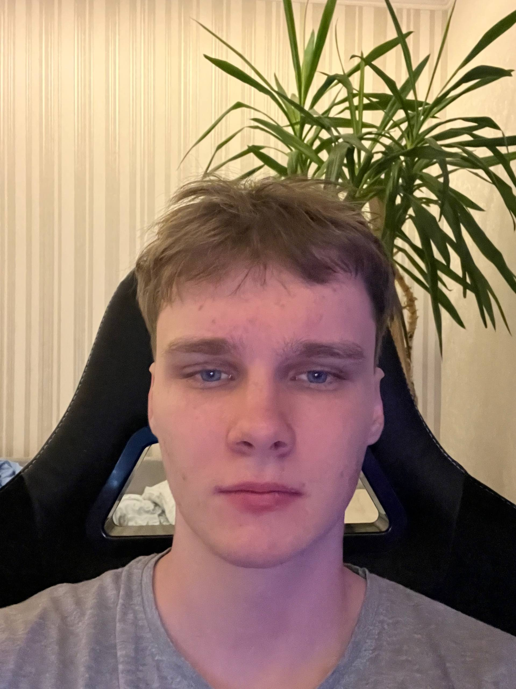

Про мене

Вітаю! Мене звати Роман, мені 19 років. Я навчаюся за спеціальністю програмування у Відокремленому структурному підрозділі «Фаховий коледж інформаційних технологій Національного університету "Львівська політехніка"».
Моє знайомство з моушн-дизайном розпочалося у 18 років. Особливе враження на мене справила анімація логотипів брендів, яка показала, як за допомогою руху можна зробити графіку більш виразною, сучасною та такою, що привертає увагу. Саме це стало поштовхом до самостійного вивчення даного напряму. Моушн-дизайном я займаюся близько року. Для створення анімацій використовую програму Adobe After Effects, у якій розробляю власні проєкти та вдосконалюю практичні навички. Найбільше мене цікавлять анімація логотипів та створення рекламних роликів, оскільки ці напрямки поєднують творчий підхід, дизайн та сучасні технології.=
Цей вебресурс створено в межах дипломної роботи з метою ознайомлення користувачів із основами моушн-дизайну. На сайті представлені навчальні матеріали, корисні ресурси та приклади моїх робіт, які демонструють результати навчання та практики у даній сфері. У майбутньому я планую продовжувати розвиватися у сфері моушн-дизайну, вдосконалювати свої навички та реалізовувати власні творчі проєкти, поєднуючи знання програмування й дизайну для створення якісного візуального контенту.